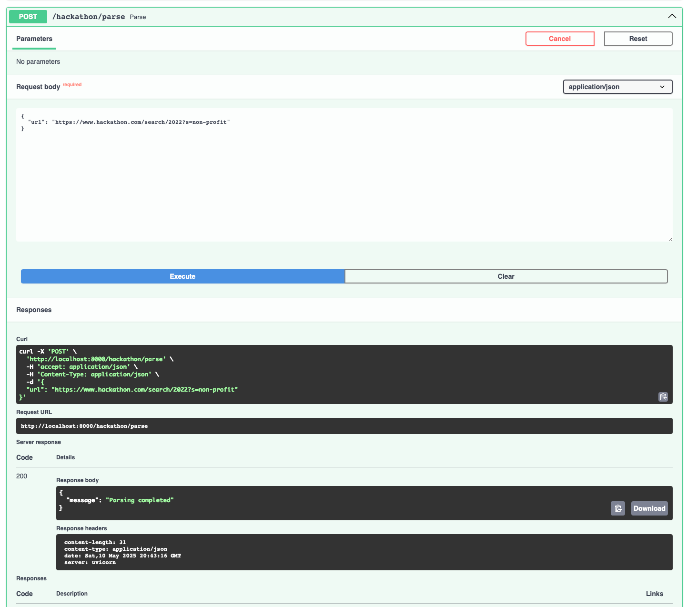
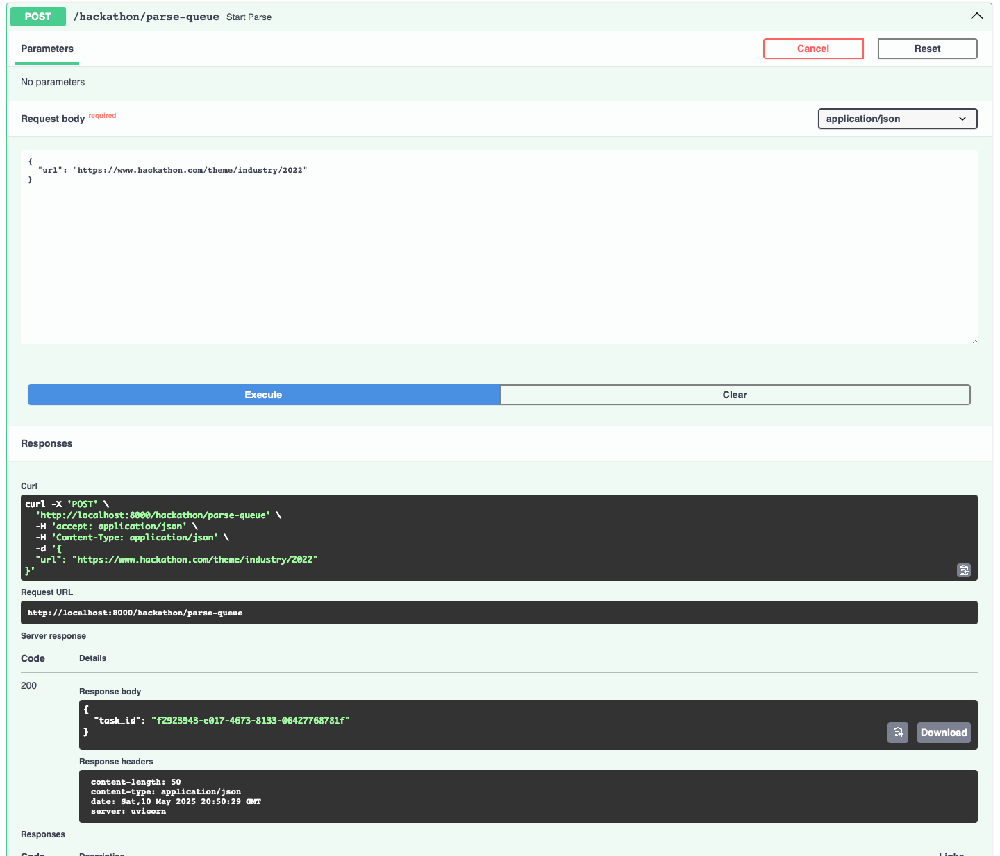
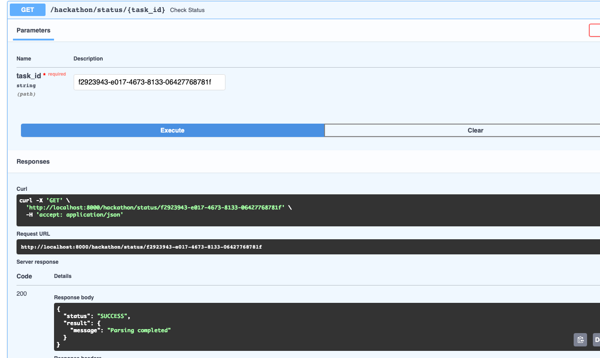
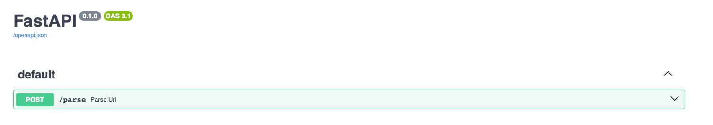

Лабораторная работа 3. Упаковка FastAPI приложения в Docker, Работа с источниками данных и Очереди
Тема:
Создание системы для проведения хакатонов
Ход работы:
Dockerfile приложения FastApi
FROM python:3.11-slim
WORKDIR /app
ENV PYTHONPATH=/app
COPY requirements.txt .
RUN pip install --no-cache-dir -r requirements.txt
COPY . .
CMD ["uvicorn", "main:app", "--host", "0.0.0.0", "--port", "8000"]
Dockerfile приложения parser
FROM python:3.11-slim
WORKDIR /parser
COPY requirements.txt .
RUN pip install --no-cache-dir -r requirements.txt
COPY . .
CMD ["uvicorn", "app.parser_app:app", "--host", "0.0.0.0", "--port", "8001"]
docker-compose.yaml
version: "3.9"
services:
postgres:
image: postgres:15
container_name: postgres_container_lab
restart: unless-stopped
environment:
POSTGRES_USER: ${DB_USER:-postgres}
POSTGRES_PASSWORD: ${DB_PASSWORD:-changeme}
POSTGRES_DB: ${DB_NAME:-app_db}
PGDATA: /data/postgres
volumes:
- postgres:/data/postgres
ports:
- "5436:5432"
networks:
- backend
redis:
image: redis:7
container_name: redis_container
ports:
- "6379:6379"
networks:
- backend
fastapi_app:
build:
context: ./app
dockerfile: Dockerfile
container_name: fastapi_app
depends_on:
- postgres
- redis
env_file:
- .env
ports:
- "8000:8000"
networks:
- backend
parser_app:
build:
context: ./parser
dockerfile: Dockerfile
container_name: parser_app
depends_on:
- postgres
- redis
env_file:
- .env
ports:
- "8001:8001"
networks:
- backend
celery_worker:
build:
context: ./app
command: celery -A app.celery_app worker --loglevel=info
container_name: celery_worker
working_dir: /app
environment:
- PYTHONPATH=/app
depends_on:
- redis
- postgres
env_file:
- .env
networks:
- backend
celery_beat:
build:
context: ./app
dockerfile: Dockerfile
container_name: celery_beat
command: celery -A app.celery_app beat --loglevel=info
depends_on:
- redis
env_file:
- .env
networks:
- backend
volumes:
postgres:
networks:
backend:
celery_app.py
from celery import Celery
celery_app = Celery(
"fastapi",
broker="redis://redis:6379/0",
backend="redis://redis:6379/1"
)
celery_app.conf.beat_schedule = {
"run-parsing-every-2-minutes": {
"task": "app.tasks.run_periodic_parsing",
"schedule": 120.0,
},
}
celery_app.autodiscover_tasks(["app"])
tasks.py
import os
import requests
from app.celery_app import celery_app
from urls import urls
@celery_app.task(name="app.tasks.parse_url_task")
def parse_url_task(url: str):
parser_url = os.getenv("PARSER_URL", "http://parser_app:8001/parse")
response = requests.post(parser_url, json={"url": url})
response.raise_for_status()
return response.json()
@celery_app.task(name="app.tasks.run_periodic_parsing")
def run_periodic_parsing():
for url in urls:
parse_url_task.delay(url)
return f"Dispatched {len(urls)} parsing tasks"
Необходимые эндпоинты в приложении FastApi
@hackathon_router.post("/parse")
async def parse(parse_request: ParseRequest):
parser_url = "http://parser_app:8001/parse"
async with aiohttp.ClientSession() as client:
response = await client.post(parser_url, json=parse_request.model_dump(), timeout=15)
response.raise_for_status()
return await response.json()
@hackathon_router.post("/parse-queue")
def start_parse(request: ParseRequest):
task = celery_app.send_task("app.tasks.parse_url_task", args=[request.url])
return {"task_id": task.id}
@hackathon_router.get("/status/{task_id}")
def check_status(task_id: str):
result = celery_app.AsyncResult(task_id)
return {"status": result.status, "result": result.result}
Файл parser_app.py
from contextlib import asynccontextmanager
from fastapi import FastAPI
from app.parser_service import parse_and_save
from db.connection import init_db
from db.parse import ParseRequest
@asynccontextmanager
async def lifespan(app: FastAPI):
init_db()
yield
app = FastAPI(lifespan=lifespan)
@app.post("/parse")
async def parse_url(parse_request: ParseRequest):
print(f"Parsing URL: {parse_request.url}")
await parse_and_save(parse_request.url)
return {"message": "Parsing completed"}
Эндпоинт для общения с parser

Эндпоинт для общения с parser, настроенный через очередь

Эндпоинт для того, чтобы узнать статус задачи

Эндпоинт приложения парсера
